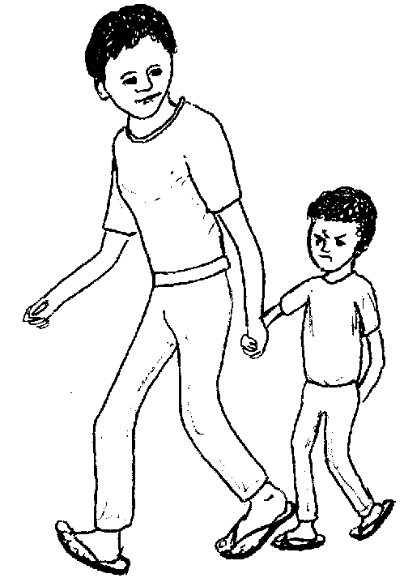
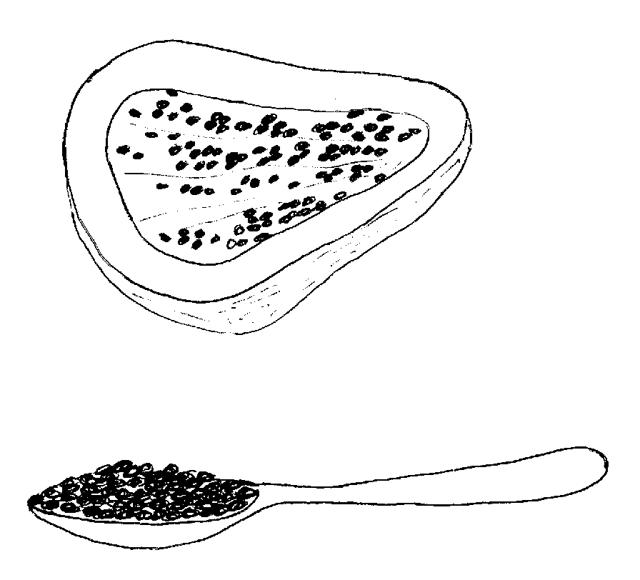
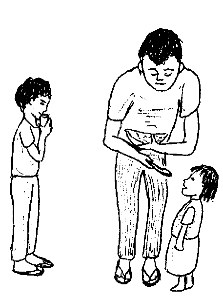
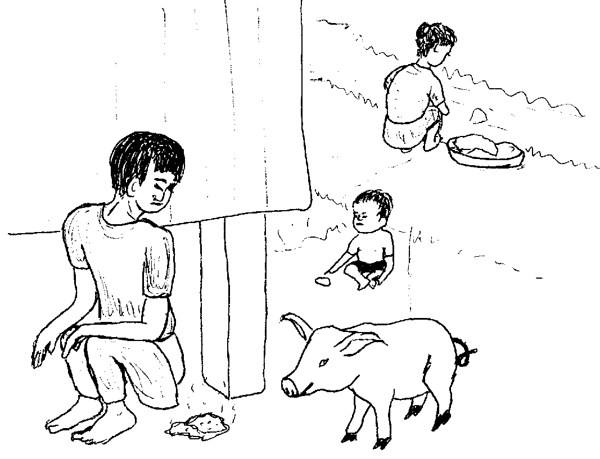
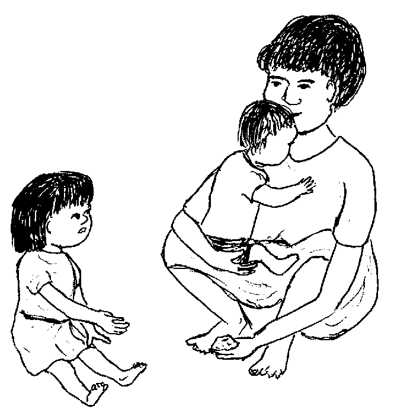
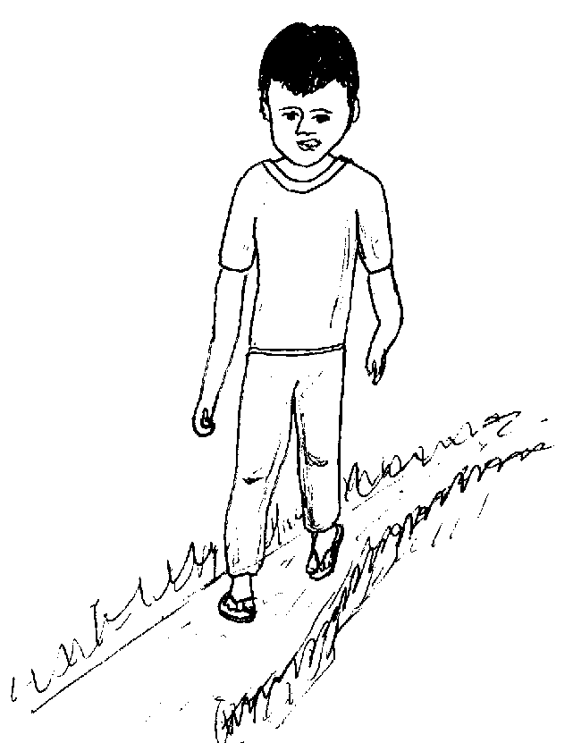
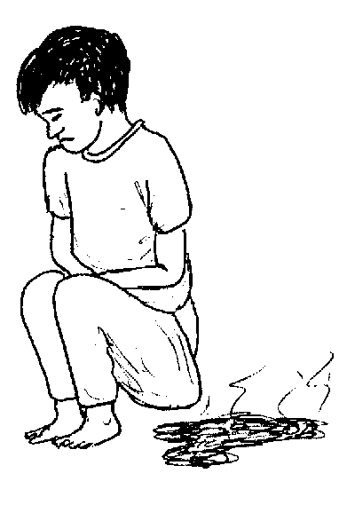
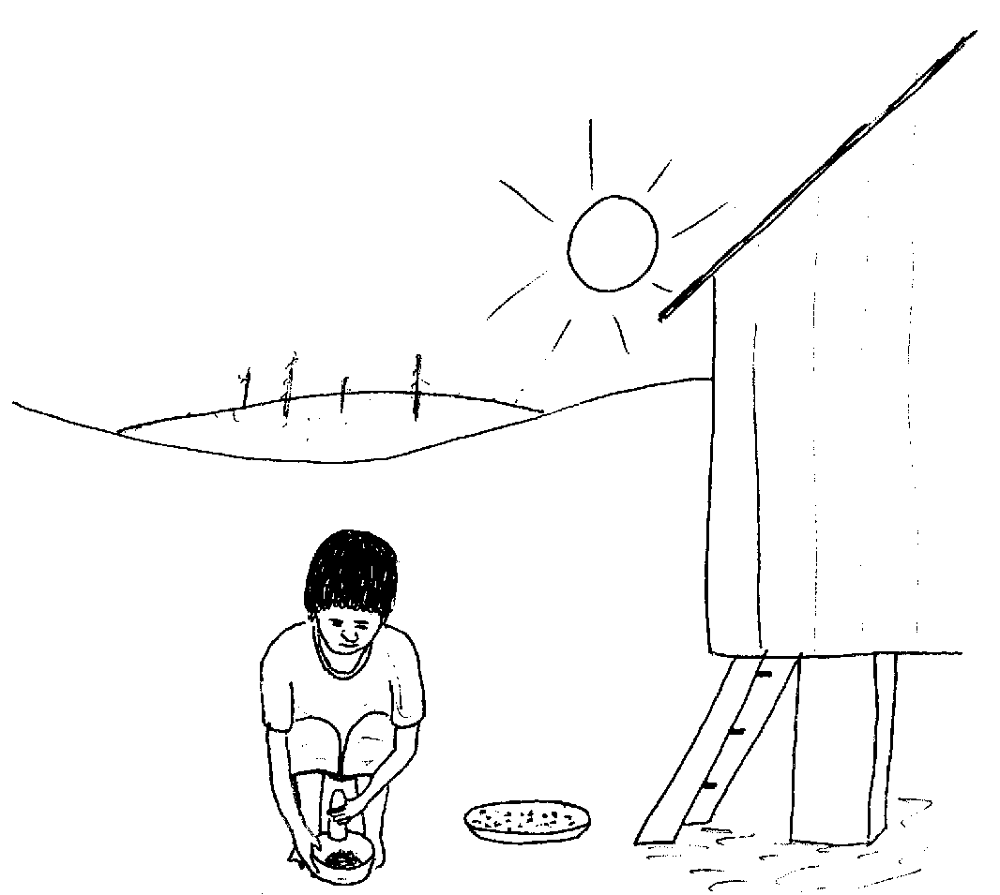

Matigsalug Manobo Healthbooks
Previous Healthbook Up to main Healthbooks page Next Healthbook
Vernacular Lexicon
A
B
BAP
BL
D
E
G
H
I
K
KI
L
LA
LIP
M
N
O
P
PA
R
S
SE
SIN
T
TE
TIN
U
V
W
Y
Z
Healthbooks
Naluhey e ne timpu ne keneg keupian neg keen ka anak ni Biltu, wey egmasakit se getek wey egpanderehes ka kulitut. Ne naheram din e ne due kerid neg lepew diyet kulitut din.
Amanan nalaggew ka iney rin su migmakalawag man e.
Migkahiyan din si Biltu teg peendiyeen din te ki Inuk te health worker diyet kandan ne bariyu.

Ne ayunan ni Biltu te mig-uyan te anak dan.
Ne migkahi si Biltu diyet ki Inuk te, “Nekey-a ka meupiya neg gimuwen ku te anak ku su kema ke migkerid buwa sikandin?”
Ne migkahi si Inuk te, “Masalig ne me etew kayit kanta ne bariyu ka egkeriren. Eyew te peggimatey te kerid, keilangan ne kuwa kew te sabekan silut te behas te kapayas tagse egkeen taman te lalimman aldew.”

Ne migkahi man-e si Inuk te, “Te kene kew pad egkeen, keilangan neg inum kew, me senge uras kew kag inum ne henduen pad neg keen kew. Emun keg pegdenganen niyu teg keen, keneg pakabawi su egpekegsewug ma. Piru egkaayun neg tuluyen niyu te weyig keg inum kew te behas te kapayas.
“Meupiya pad man-e ke tapey kew egderampil te behas te kapayas, neg kataman eglupeten e man-e wey igtahu diye te butilya. Ne emun ke due etew neg keriren, due-rue neg kabawian sikandin su duen man-e tapey ne nalupet ne behas te kapayas su kema ke ware meyilew ne behas te kapayas.”
Neinu-inu amana si Biltu meyitenged te behas te kapayas ne igbawi, piru neele din su masulug ka me kapayas diyet kamet dan.

Ne migkahi si Inuk te, “Kene nu egkalingawi teg pamawi ka duma riyet baley niyu su mahaan ma eggalin ka kerid diyet duma. Te sasangan ke pad neg bebawi, keilangan neg pamipian niyu ka langun ne me ulesen niyu wey me ikam wey pamanihus kew tagse aldew.”
Ne migkahi si Biltu te, “Guhuri key ke nekey kag gimuwen ney su eyew kene key egkeriren te seup. Su amanan mareet sika diyet lawa ta.”
Ne migpangguhud si Inuk ne migkahi te, “Kene ki perem egkeriren emun keg ayad-ayad ki egpanlinis.
“Kema eleg-eleg kew pamanihus tagse aldew. Ne keilangan ne due liyuan niyu su eyew diye eg-indes. Ne keilangan neg panlu-lu kew te belad keg pekeimpus ka eggendiye te liyuan wey te kene pad eg-andam pad teg keenen. Ne keilangan man-e neg panempuhan ka me sulu te kemel ta.

“Keilangan ne iling perem due ka eggimuwen ta su ka atelug te kerid, diyeg puun te tei ta, ne diye egpakasuksuk te me sulu ta. Puun te belad ta, eggalin sikandan diye teg keenen ke eggen-gen ki teg keenen ne ware ki pad migpanlu-lu.”
Ne migkahi si Biltu te, “Malehet ka. Su nakakita key te me kerid diyet tei ney.”
Ne migkahi man-e si Inuk te, “Dereisek amana ka atelug te kerid, ne diyeg ugpe sikandan te me belad ta ke kene ki egpanlu-lu.”
Ne migpabulus si Inuk ka migkahi te, “Panunggilingan ke due etew ne mig-indes diyet sapiling te baley ran.

“Ne seinin etew, due atelug te kerid wey ke kahew diyet tei rin su migkerid ma sikandin.
“Te pegkakita te babuy wey ke asu naa, ingkeen e ka tei wey ke impanuwal naa te babuy wey in-empet diyet sapiling te baley neg pangekelahan te me bate.
“Ne seeye se me bate ne migpangekelag diyet sapiling te baley, nakuan e te me atelug te kerid.”
Ne migpabulus si Inuk ka migkahi te, “Nataman, te peg-uli te bate, migkepkepan e te iney rin, ne naalinan e degma te atelug te kerid ka belad te iney rin.

“Te pegsusubba rin, nalingew rin ne migpanlu-lu te belad din, ne ka atelug, miggalin e diyet keenen. Ne seeye se me taltalaanak ne nangeen dutu, te keneg kaluhey, egmangiindes e wey egmangeriren.”
Ne migkahi si Inuk te, “Seini ka panunggilingan ke egmemenu ka kahew wey kerid neg galin diyet duman etew wey diyet me sumbaley.”
Amanan neinu-inu si Biltu te impangguhud ni Inuk kandin.
Ne migpabulus man-e si Inuk ka migkahi te, “Ay-ayari niyu teg lu-lu kag keenen te kene pad igsubba, wey keilangan neg kalutu amana ka karni neg gilutuen niyu human egkeena.
“Bunbuni niyu kag keenen su eyew keneg kalatunan te langew su sika man-e kag panguyan te me kahew wey me atelug te kerid puun te me tei te me etew wey ke me ayam.”

Ne mig-inse si Biltu, “Mania, egpakarereet bes kanta ka kene pad egkalutu ne karni?”
Ne migtabak si Inuk, “Masalig amana ka me kahew te karni ne meyilew pad, piru ke eg-ay-ayaran teg gilutu, egpamatey e ka me kahew purisu kenad ne delikadu neg keen.”
Ne migkahi si Inuk te, “Due man-e dereisek ne kalasi ne uled ne egsupsup te langesa.
“Ka etew ne due uled ne iling kayi, labi e ka me bate, egmemakalawag wey egmagguye.
“Ke keneg pakabawi kandan ka behas te kapayas, keilangan neg beliyan sikandan te tablitas su eyew iggimatey te uled.”
Ne mig-abey pad man-e sikandin ka migkahi te, “Kene kag kaseleran te sika ne kalasi ne uled emun ke egsisinilas ka wey egsesepatus su diye seini mig-ugpe te tane neg seled diyet laplap te paa ta peendiye te lawa ta.”

Ne migkahi man-e si Inuk te, “Due man-e lain ne kalasi te kahew neg puun te weyig, keenen wey diyet tei, ne seini ka egngaranan te ‘Amiba.’

“Puun te amiba, hendue teg kemeten ka getek, eglusungan, eg-iindes, wey due langesa diyet tei.
“Eyew kene ki egpakareralu te iling due, ikulan ded man-e ke egmenuwen teg pamawi ka me kerid.
“Keilangan ne malinis ki wey kag keenen. Keilangan ne malinis ka weyig neg inumen wey ke malindit, keilangan neg pakalkaleen eyew egpatey ka kahew.”
Ne mig-inse si Biltu, “Eg-ilingen ded teg bawi due ka pegbawi te kerid?”
Ne migtabak si Inuk, “Uya, egkaayun ne behas te kapayas ka eggamiten nu ne igbawi te amiba.
“Manedted sika ne bawi, labi e ke igdampil pad ne human eglupeten.

“Kene niyu egkalingawi te kene kew pad egkeen, inuma niyud daan — katatelu tagse aldew.
“Wey emun ke dueg iindes, keilangan ne malasi egpeinuma te weyig wey minsan sabew eyew egkabullasan ka naawe ne weyig diyet lawa.”
Ne migkahi si Inuk te, “Ke keneg keulian te behas te kapayas ka mig-amiba, egkaayun neg beli te tablitas eyew iggimatey te kahew. Te an-anayan, keilangan ne peinuma niyu te behas te kapayas su eyew kene kew egkahastuwan.”
Ne henduen pad ne mig-uli si Biltu diyet ugpaan dan. Mig-inum sikandin te behas te kapayas wey impeinum din degma ka langun ne diyet baley ran. Ne ware naluhey neulian e ka anak din.
Sikandan langun migpalintutuu te tambag ni Inuk kandan meyitenged te pegpanlinis wey te pegpakale-kale te weyig neg inumen dan ke kenen limpiyu ka weyig.
Wey egmanisinilas e sikandan kag manlihawang eyew keneg kaseleran te dereisek ne kalasi te kahew ka me paa ran.
Egmenuwen taa teg pekeila ke due uled diyet getek ta?
Egmenuwen taa teg bawi ka me uled wey ka amiba?
Nekey pad man-e ka duma neg gimuwen ta ke dueg iindes?
Nekey-a kag gimuwen ta eyew kene kig uleren wey eg-amibeen?
Nekey-a kag gimuwen ta su eyew kene kig seleran te duman me uled ne delikadu?
Keneg keupian neg keen, masakit se getek, egderehes se kulitut, wey due uled diyet tei. (Lukib 47)
Pinaahi te pegpeinum te senge silut ne behas te kapayas seled te lalimman aldew. (Lukib 49, 65) Keilangan te kene ki pad egkeen, daan eg-inum te ware pad tahu te getek ta. Keilangan neg inum degma ka langun ne pamilya ta. (Lukib 51, 67)
Keilangan neg inum te dakel ne weyig eyew igliwan te naawe ne weyig diyet lawa. (Lukib 65)
Kene ki egkaalinan te me kahew, uled wey ka me atelug dan neg puun te ihi wey tei te etew wey ke me ayam. Eggimuwen ta seini pinaahi te:
(a) Diyeg indes te liyuan. (Lukib 53)
(b) Egpanlu-lu te belad pekeimpus kag indes wey te kene pad eg-andam teg kakeen. (Lukib 53)
(c) Egpanamperan ka me sulu. (Lukib 53)
(d) Eglu-luan kag keenen wey eg-aya-ayaran teg gilutu ka me sere hendueg keena. (Lukib 59)
(e) Egbunbunan kag keenen su eyew keneg latunan te minsan nekey neg manlayang-layang. (Lukib 59)
(f) Eg-inum te malinis wey ke impakale-kale ne weyig. (Lukib 63)
This page last updated: 28-Dec-2019
Copyright © 2009-2010